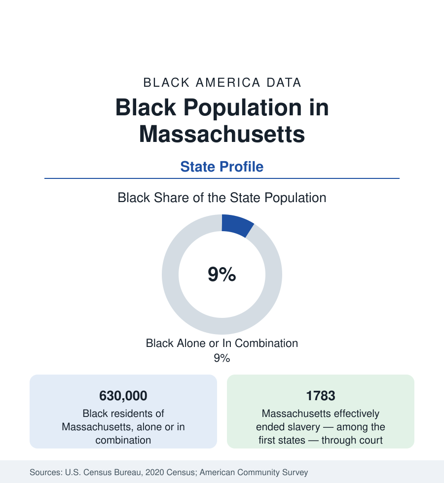

Black Census
Black Population in Massachusetts: The Abolitionist's State, Its Oldest Free Communities
About 630,000 Black Massachusetts residents — one in eleven — anchored by Boston, Springfield, and the Commonwealth's abolition-era roots. The census profile.

Massachusetts holds about 630,000 Black residents — Black alone or in combination — roughly one in eleven of its people, with Black alone at about 452,000, or 6.4 percent. The Commonwealth's Black community is the oldest continuously free one in America in the modern sense — abolition reached it a generation before the Civil War, its free Black communities built institutions while slavery still stood elsewhere — and its modern population is the most immigrant-heavy of any northern state, dominated by the Caribbean diaspora. Boston holds the center; Springfield the second; and the state universities' orbit the rest.
Boston and the Commonwealth's Black Capitals
Metro Boston holds the large majority: the city profile's account gives the city at about a quarter Black (some 160,000 residents), centered historically in Roxbury and Dorchester, with the modern suburbs — Brockton (the state's second-largest Black population center in the city data, roughly a third Black), Randolph (roughly two-fifths Black, the state's highest-share suburb), Milton, Stoughton, and the MetroWest towns — holding the suburban majority of the metro's Black population. Springfield, the Connecticut River city, is the second center at roughly a fifth Black, with a metro Black population in the range of 60,000 to 70,000, built on the arms factories' and insurance companies' labor demand and the Springfield Black community's deep institutional record (the state's second Black press tradition, a cluster of historic churches). Worcester, the state's second city, is roughly a tenth Black and growing through the university and health economies; New Bedford, Fall River, Lowell, and Lawrence hold the smaller gateway-city communities of the old mill belt.
The Abolition Record and the Institutions
Massachusetts's Black institutional record is the nation's deepest. The African Meeting House on Beacon Hill (1806) is the oldest surviving Black church building in the country; the Abiel Smith School (1835) was among the first public schools built for Black children; the 54th Massachusetts Regiment's assault on Fort Wagner is the Civil War's most famous Black military episode; and Boston's abolitionist organizations — the Massachusetts Anti-Slavery Society, the Vigilance Committee's Underground Railroad work — were the movement's institutional core. The modern institutions descend directly: the Boston Black church network, the Museum of African American History's two sites (Beacon Hill and Nantucket — the island's Black whaling community is the state's second-oldest), and the university layer (Boston University, Harvard, Tufts, UMass Boston, and the Roxbury-based institutions) carry the education data. The state has no HBCU; the Black college presence runs through the majority institutions and the Roxbury Community College's role.
The Caribbean Composition
The modern composition is the profile's most distinctive fact outside the South: Massachusetts's Black population is among the most foreign-born of any state in this reference — roughly a third of Black residents are immigrants in the survey data, the largest shares Haitian, Jamaican, Dominican (counted in the Black totals by self-identification), Cape Verdean (a community of unusual size and concentration — New Bedford and Boston hold the largest Cape Verdean populations in the United States), and West African (Ghanaian and Nigerian above all). The composition reshapes every table: the age structure younger, the household structures more varied, the language data distinctive, the school-enrollment data of Boston and Brockton dominated by the diaspora's second generation. The native-born Black population — the Beacon Hill and Roxbury descendants, the Springfield old families — remains institutionally central while numerically a minority of the whole.
Indicators and Change
Massachusetts's Black indicators present the prosperous-state paradox in its strongest form: the state's overall income, education, and health figures rank at the nation's top, while Black medians trail the state figures by the widest margins in this reference (a function of the state's high ceiling, not of unusually low Black medians — Black Massachusetts medians exceed the national Black figures on several measures, and Black attainment through the university system is high). The estimates show continued growth — the Brockton-Randolph corridor and the gateway cities gaining, Boston's core share edging down as downtown prices displace — with the state's housing cost data as the profile's central constraint, as in the Connecticut and Rhode Island files.
Reading the Massachusetts Numbers
Massachusetts's profile should be quoted with two sentences: the oldest free Black community in America, and the most Caribbean of any northern state's Black population. The first explains the institutions; the second explains the demography; together they make 630,000 people the Commonwealth's most historically weighted minority population by a wide margin.
More in Black Census
The Black Population of the United States: Size, Definitions, and Distribution
The Black population of the United States totals 52.8 million — 15.4 percent of the nation. How the Census Bureau defines and counts the population, and where it lives.
Black Median Household Income in the United States
Black median household income stands at $56,490 in the Census Bureau's annual income report — how the figure is measured, how it compares, and what drives it.
The Black Poverty Rate: Levels, Children, and the Long Trend
The official Black poverty rate is 17.1 percent — against 11.1 percent nationally and 7.7 percent for non-Hispanic White Americans. How poverty is measured and what the data show.
Source: U.S. Census Bureau, 2020 Census; American Community Survey; Population Estimates Program.